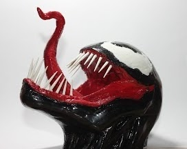

28-07-2021
Cuando se imprime una pieza en 3D no es que acabe pulida del todo. Es por eso que debemos someterla a un proceso conocido como “post-procesado”.En este caso, veremos cómo llevar a cabo el post-procesado del PLA.
Para empezar necesitamos una serie de materiales:
Masilla Epoxi: Usada para suavizar juntas en piezas impresas por partes. Gracias a su naturaleza (bicomponente) es fácil de aplicar una vez mezclada, endureciéndose por completo al pasar unas 24 horas. Podemos limar y pintar sobre ella
Spray de Imprimación para plásticos: para evitar que se “caiga” la pintura una vez aplicada sobre la superficie del PLA procederemos a darle unas cuantas capas de imprimación.
Pintura: intentad que no sea de mala calidad porque puede dificultar el trabajo.
Utensilios múltiples: superglue, lijas, pinceles, mascarilla, gafas de protección…
La protección es IMPRESCINDIBLE; al limar el PLA éste desprende una serie de partículas que se pueden meter en los ojos (al estilo del serrín) o entrar por las vías respiratorias. También hay que tener en cuenta el espacio donde se va a realizar el post-procesado; lo mejor sería al aire libre o en un lugar ventilado.

Una vez que sabemos esto el proceso es sencillo:
En el caso de la impresión por partes pegamos las piezas con superglue.
Aplicamos la masilla epoxi para suavizar las juntas generadas por la unión de las partes.
Una vez tengamos una única pieza procedemos a limar hasta que adquiera una textura uniforme y lisa.
Aplicamos un par de capas de imprimante, dejando entre capa y capa una/media hora (según marca y especificaciones del fabricante).
Por último, pintamos a nuestro gusto.
When a part is 3D printed, it is not that it ends up polished at all. That is why we must submit it to a process known as “post-processing”.In this case, we will see how to carry out PLA post-processing.
To begin with, we need a series of materials:
Epoxy Putty: Used for smoothing joints in parts printed in parts. Thanks to its nature (bicomponent) it is easy to apply once mixed, hardening completely after 24 hours. We can file and paint over it
Primer Spray for plastics: to prevent the paint from “falling off” once it has been applied to the PLA surface, we will proceed to apply a few coats of primer.
Paint: try not to use poor quality paint because it can make the work more difficult.
Multiple utensils: superglue, sandpaper, brushes, mask, protective goggles…
Protection is ESSENTIAL; when PLA is filed it gives off a number of particles that can get into the eyes (sawdust style) or enter the respiratory tract. The space where post-processing is to be performed should also be taken into account; outdoors or in a ventilated place would be best.
Once we know this, the process is simple:
In the case of piecewise printing we glue the parts together with superglue.
Apply the epoxy putty to smooth the joints generated by the union of the parts.
Once we have a single piece we proceed to file until it acquires a uniform and smooth texture.
Apply a couple of coats of primer, leaving one/half hour between coats (according to brand and manufacturer’s specifications).
Finally, paint to your liking.